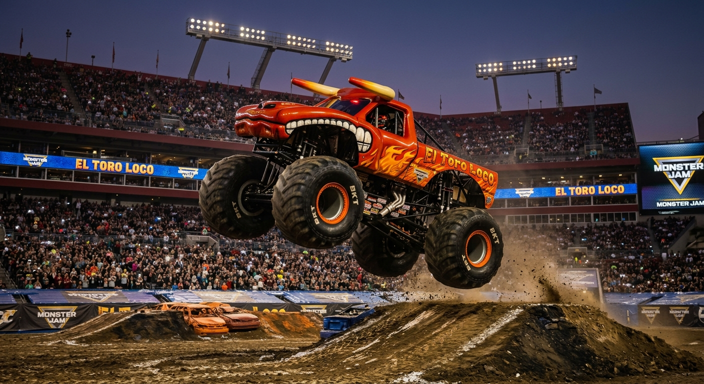

El Toro Loco

El Toro Loco, also known as The Mad Bull, is a famous bull that has captured the hearts of many. Known for its fierce temperament and impressive strength, El Toro Loco has become a symbol of power and resilience in the world of bullfighting.
With its striking appearance and unpredictable behavior, El Toro Loco has been featured in numerous events and competitions, drawing crowds from all over the world. Its legacy continues to inspire both fans and aspiring bullfighters alike, making it a legendary figure in the realm of bullfighting.